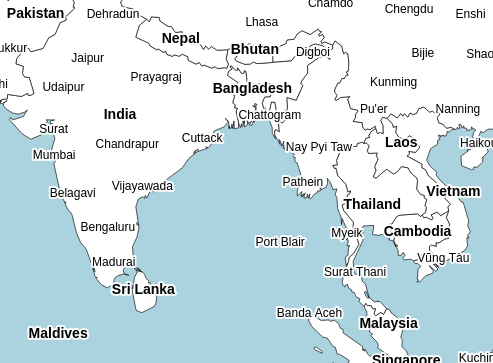

April 21 marked the first public release of tinyworldmap, a world map for offline-first and low-bandwidth web apps. It was originally developed as a simple offline fallback for OpenStreetMap tiles.
With 1k Github stars in the first week and quite a few websites immediately adapting the map, the reception was very positive.
At the same time, it was clear that a less coarse map would be preferred. In the days following the release, people gently reminded us that both the Caspian Sea and the Great Lakes were shown as land, that many islands were missing, that half of our (not their, our) home country looked like it was about to drift into sea, and that some UK towns were already underwater.
In tinyworldmap’s third release, this has all been fixed. Scroll horizontally to see the original version:
Although the additional detail has resulted in a slightly bigger file (~450K gzipped), most of the vertices were obtained by smoothing sparsely populated areas with complex shorelines. We dedicated considerable effort to ensure the smoothed shores blend into the overall map style.
You can now do this:
For every map layer, any property can be set on the canvas rendering context. More info can be found in our documentation. Of course, because the map is rendered client-side, excessive use of shadows, filters and textures will slow down older devices.
We have received a lot of questions from people who would like to create custom-content maps themselves. Road maps, city maps, detail maps, translated maps, you name it.
Currently, the only way to obtain a custom map is by hiring us. I’d love to document and open-source the code, and make the entire process more reproducible and less dependent on manual changes, but that requires both a lot of time and may hurt our business. In other words, we would need an alternative source of funding.
If you are interested in providing funding or if you know of an organization that might be, let us know!
© tinyworldmap